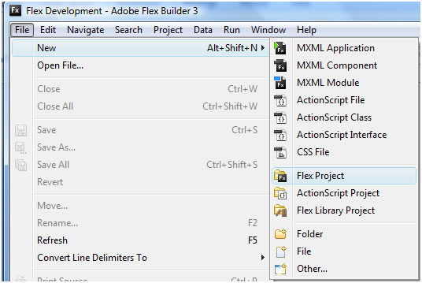
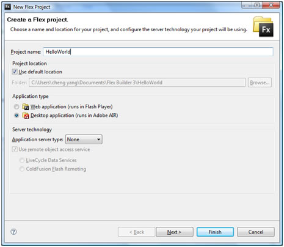
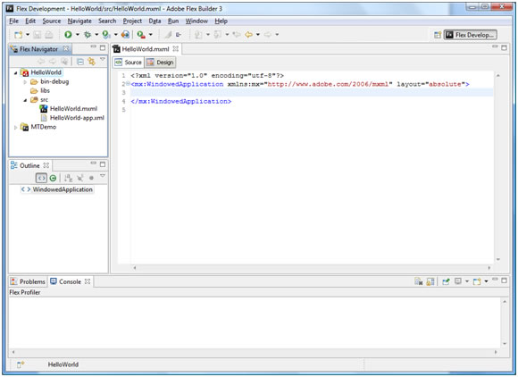
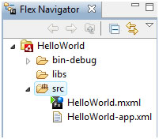
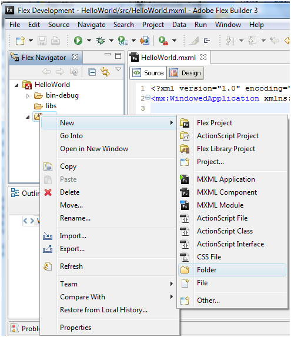
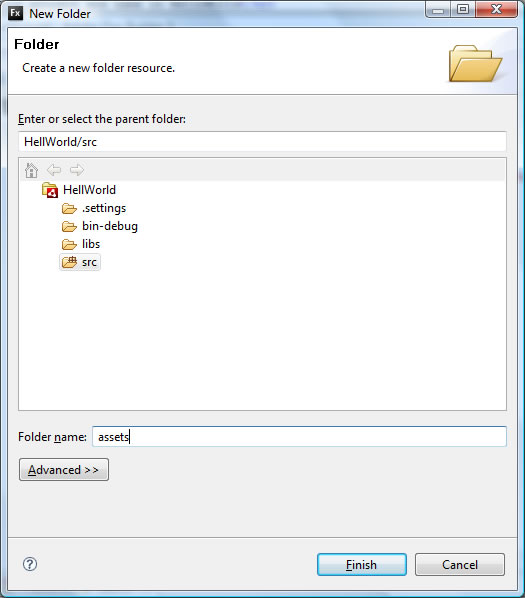
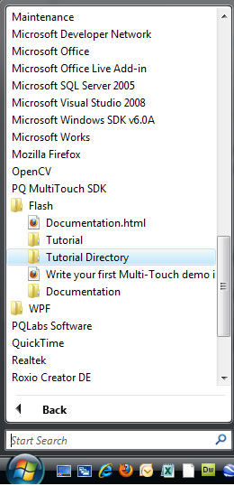
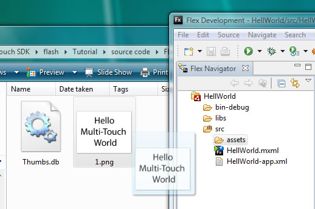
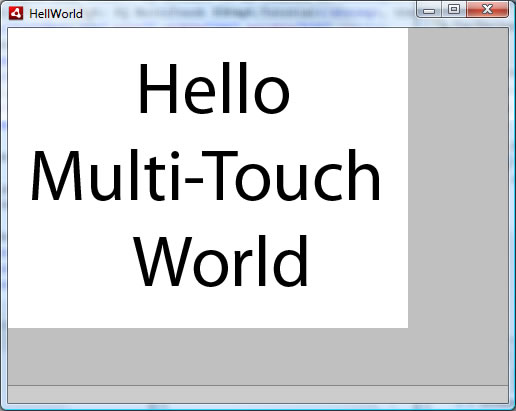

<!DOCTYPE html PUBLIC "-//W3C//DTD XHTML 1.0 Transitional//EN" "http://www.w3.org/TR/xhtml1/DTD/xhtml1-transitional.dtd">
<html xmlns="http://www.w3.org/1999/xhtml">
<head>
<meta http-equiv="Content-Type" content="text/html; charset=utf-8" />
<title>Write your first Multi-Touch demo in  90 seconds</title>
	<script type="text/javascript" src="scripts/shCore.js"></script>
    <script type="text/javascript" src="scripts/shBrushAS3.js"></script>
	<script type="text/javascript" src="scripts/shBrushBash.js"></script>
	<script type="text/javascript" src="scripts/shBrushCpp.js"></script>
	<script type="text/javascript" src="scripts/shBrushCSharp.js"></script>
	<script type="text/javascript" src="scripts/shBrushCss.js"></script>
	<script type="text/javascript" src="scripts/shBrushDelphi.js"></script>
	<script type="text/javascript" src="scripts/shBrushDiff.js"></script>
	<script type="text/javascript" src="scripts/shBrushGroovy.js"></script>
	<script type="text/javascript" src="scripts/shBrushJava.js"></script>
	<script type="text/javascript" src="scripts/shBrushJScript.js"></script>
	<script type="text/javascript" src="scripts/shBrushPhp.js"></script>
	<script type="text/javascript" src="scripts/shBrushPlain.js"></script>
	<script type="text/javascript" src="scripts/shBrushPython.js"></script>
	<script type="text/javascript" src="scripts/shBrushRuby.js"></script>
	<script type="text/javascript" src="scripts/shBrushScala.js"></script>
	<script type="text/javascript" src="scripts/shBrushSql.js"></script>
	<script type="text/javascript" src="scripts/shBrushVb.js"></script>
	<script type="text/javascript" src="scripts/shBrushXml.js"></script>
	<link type="text/css" rel="stylesheet" href="styles/shCore.css"/>
	<link type="text/css" rel="stylesheet" href="styles/shThemeDefault.css"/>
	<script type="text/javascript">
		SyntaxHighlighter.config.clipboardSwf = 'scripts/clipboard.swf';
		SyntaxHighlighter.all();
	</script>
</head>

<body>
<p>This tutorial is a detailed guide for people new to Flex. If you already have experience with Flex but new to PQ Labs Multi-Touch SDK, we recommand a quick version for you. Click <a href="Flex_Experienced.html">HERE</a>.</p>
<h1>Summary</h1>
<p>In this tutorial, you will learn how to create a simple Multi-Touch in 90 seconds<br />
  To build this application you will need the following software: <br />
</p>
<ul>
  <li>Adobe  Flex Builder 3  <a href="http://www.adobe.com/products/flex">http://www.adobe.com/products/flex</a></li>
  <li>PQ  Labs Multi-Touch SDK for Flash/Flex/AIR <a href="http://multi-touch-screen.net/support.html">http://multi-touch-screen.net/support.html</a></li>
</ul>
<p>Please remember the installation location of PQ Labs Multi-Touch SDK as you may need some files from there.</p>
<h1>Application Overview</h1>
<h2>&nbsp;</h2>
<h1>Code Files</h1>
<p><strong>HelloWorld.mxml</strong></p>
<pre class="brush: xml;">
<?xml version="1.0" encoding="utf-8"?>
<mx:WindowedApplication xmlns:mx="http://www.adobe.com/2006/mxml" layout="absolute" backgroundColor="0" creationComplete="onComplete();">
       <mx:Script>
              <![CDATA[                 
                     import pq.multitouch.*;
					 import pq.multitouch.manipulators.*;
                     private function onComplete():void
                     {
                           MultiTouch.init(this);
                           // Enable Multi-Touch gesture (drag, scale, rotate) for any
                           // flash MovieClip / Sprite / DisplayObject / UIComponent
                           MultiTouch.enableGesture(image, new DragScaleRotate());
              	     }
              ]]>
       </mx:Script>
       <mx:Image id="image" source="assets/1.png"/>
</mx:WindowedApplication>
</pre>
<h1>Step by Step Tutorial</h1>
<h2>Step1 Create a new Flex application project and name it HelloWorld</h2>
<ol>
  <li>Open Adobe Flex Builder 3</li>
  <li>Create  a new project. You can find this from  <strong>File &gt; New &gt; Flex Project</strong>, as show in figure</li>
  <li>Name  the project “<strong>HelloWorld</strong>”, and set <strong>Application type</strong> to <strong>Desktop application (runs in Adobe AIR)</strong>.  Click <strong>Finish</strong></li>
  <li>Flex Builder should create Here is the what final screen should look like. </li>
  <li></li>
</ol>
<h2>Step 2 Create a subfolder named assets under src</h2>
<ol>
  <li>Locate the<strong> Flex Navigator</strong> view. It is on top right of Flex Builder IDE window by default</li>
  
  <li> right click<strong> src</strong> folder icon, then select <strong>New &gt; Folder</strong> from the pop-up menu.</li>
  
  <li>Name the new folder “<strong>assets</strong>”,click <strong>finish</strong>. Make sure it parent folder is HelloWorld/src, as show below</li>
  
</ol>
<h2>Step 3 Display an image in Flex </h2>
<ol>
  <li>Open  the sample code folder. By default it is located at <strong>C:\Program Files\PQLabs\MultiTouch SDK\flash\Tutorial\source code\Flex Builder 3(AIR Debug Ver 1.0)</strong>, or you can find a quick link from <strong>Start Menu &gt;All Programs&gt; PQ MultiTouch SDK&gt;Tutorial</strong>, then you can find all subfolders.</li>
 </li>
  <li>Just  select and drag <strong>1.png</strong> from sample  code folder to <strong>assets</strong> in the Flex  Builder IDE. <strong>1.png</strong> will appear under assets in <strong>Flex  Navigator</strong>.</li>
  
  <li>In <strong>HelloWorld.mxml</strong>, add a image by  entering <strong>&lt;mx:image/&gt; </strong>and add  the <strong>id</strong> attribute with a value of<strong> image </strong>, source attribute with  a value of <strong>assets/1.png</strong></li>
      <pre class="brush: xml;">
<mx:Image id="image" source="assets/1.png"/>
</pre>
  <li>Now you can click or choose <strong>Run &gt; Run Hello</strong>. World from menu to build and run. If everything is correct, the project will build successfully. The application looks like</li>
  
</ol>
<h2>Step 4 Link project with PQ Labs SDK</h2>
<p>This  should be done by PQ Labs SDK installer. </p>
<h2>Step 5 Add Multi-Touch stuffs</h2>
<ol>
  <li>In  the opening <strong>WindowedApplication</strong> tag,  add an attribute <strong>creationComplete</strong> and set the value to <strong>onComplete();</strong>. You  may also want to set <strong>backgroundColor</strong> to 0, which is black.
<pre class="brush: xml;">
<mx:WindowedApplication xmlns:mx="http://www.adobe.com/2006/mxml" 
	layout="absolute" backgroundColor="0" creationComplete="onComplete();">
</pre>
  </li>
  <li>Before  close <strong>WindowedApplicatio </strong>tag, add a  Script component by entering <strong>&lt;mx:Script&gt;</strong>. Flex Builder completes  the tag for you.
<pre class="brush: xml;">
<mx:Script>
		<![CDATA[
			
		]]>
</mx:Script>

</pre>
  </li>
  <li>In  the <strong>mx:Script</strong> block, enter <strong>import   pq.multitouch.*;</strong>  to import  the MultiTouch class. The MultiTouch class is responsible for doing all  Multi-Touch stuffs.
enter <strong>import   pq.multitouch.manipulators.*;</strong> 
to import  the DragScaleRotate class which handles with drag, scale, rotate operation.
<pre class="brush: xml;">
<mx:Script>
		<![CDATA[
		import pq.multitouch.*;	
		import pq.multitouch.manipulators.*;	
		]]>
</mx:Script>

</pre>
  </li>
  <li>In  the <strong>mx:Script</strong> block, after import  statement. Add a new function named <strong>onComplete()</strong>.  When the application states, it will call onComplete() handler
<pre class="brush: as3;">
<mx:Script>
		<![CDATA[		
			import pq.multitouch.*;
			import pq.multitouch.manipulators.*;
			private function onComplete():void
			{
							
			}
		]]>
</mx:Script>

</pre>
  </li>
  <li>In <strong>onComplete</strong> function, add <strong>MultiTouch.init(this);</strong> , which  initiates connection to PQ Multi-Touch server and initialize internal  structures. </li>
  <pre class="brush: as3;">
private function onComplete():void
{
	MultiTouch.init(this);		
}

</pre>
  <li>Now  you can dynamically enable any DisplayObject (Image, VideoDisplay, Canvas, … )  to support multi touch gestures defined in PQ Labs libaray. By call <strong>MultiTouch.enableGesture()</strong>
<pre class="brush: as3;">
private function onComplete():void
{
	MultiTouch.init(this);
	MultiTouch.enableGesture(image, new DragScaleRotate());			
}

</pre>
  </li>
  <li>Build  and run the application.</li>
</ol>
</body>
</html>

